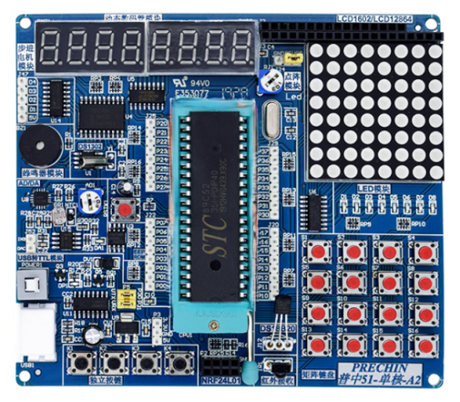
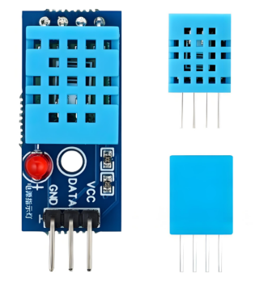

产品落地
智感工厂落地海泰园区，普惠AI安全系统守护生产
为园区内12家中小制造企业提供低成本、离线可用、双模态融合的安全监测服务，助力企业快速完成安全智能化改造...
2026-04-15 · 阅读 1,258
了解智感工厂的最新进展与行业动态
紧跟政策导向，把握市场机遇
《安全生产法》《"十四五"智能制造发展规划》等政策密集出台，明确要求制造企业实现风险分级管控、隐患实时预警、数据全程可追溯。传统"人盯人"模式已无法满足合规要求，低成本智能监测成为中小工厂转型刚需。
据CNNIC《从互联网大数据看中小企业发展（2025）》，我国中小企业达6348.7万户，制造业占比超40%。中小微工厂安全智能化改造率不足8%，市场处于蓝海阶段，普惠型工业安全产品具备万亿级市场潜力。
随着轻量化AI算法成熟，工业安全监测从"云端依赖"转向"边缘优先"。离线AI视觉+物联网传感器融合方案可实现断网不断检、本地推理、秒级报警，完美适配老旧厂区、地下车间等无网/弱网场景。
据国家应急管理部2025年机械行业安全事故分析，未佩戴劳保用品、违规闯入危险区域、环境参数异常是主要诱因。AI视觉实时识别+环境联动监测可有效降低80%以上人为违规风险，成为企业安全管理标配。
真实场景验证，效果可量化
车间人员密集、温湿度敏感、需规范佩戴安全帽。预算有限、网络不稳定、人工巡检漏检率高。
断网可独立运行7天，网络恢复自动同步数据；自动生成安全台账与EDA分析报告，顺利通过3次安监检查。

金属切削、油污环境、危险设备多。7×24小时不间断监测，替代2名专职巡检人员。
违规自动抓拍存档，事故溯源清晰，安全管理成本降低60%
厂区分散、管理半径大。多工厂管理版，双角色权限+全局数据看板。
园区通过安全生产标准化评审，误报率下降60%

温湿度影响产品质量、人员需规范穿戴、卫生与安全双重要求。环境数据无记录、合规材料整理繁琐。
历史数据一键导出，满足食品生产安全核查要求，生产安全与产品品质双重提升
为园区内12家中小制造企业提供低成本、离线可用、双模态融合的安全监测服务，助力企业快速完成安全智能化改造...

在MaixCAM边缘设备上运行TinyLlama轻量级大语言模型，成为国内少数支持断网场景下自然语言交互的工厂安全方案...
始终坚持"技术下沉、服务基层"理念，将AI视觉与物联网技术应用到最需要安全保障的小微车间、偏远厂区...
第一时间获取产品更新、行业资讯与成功案例